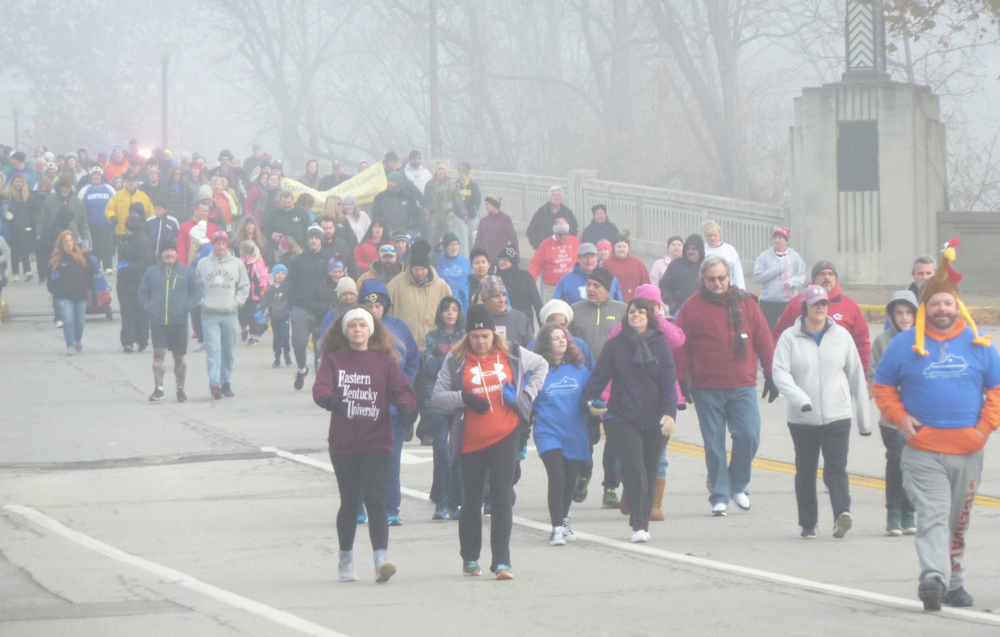
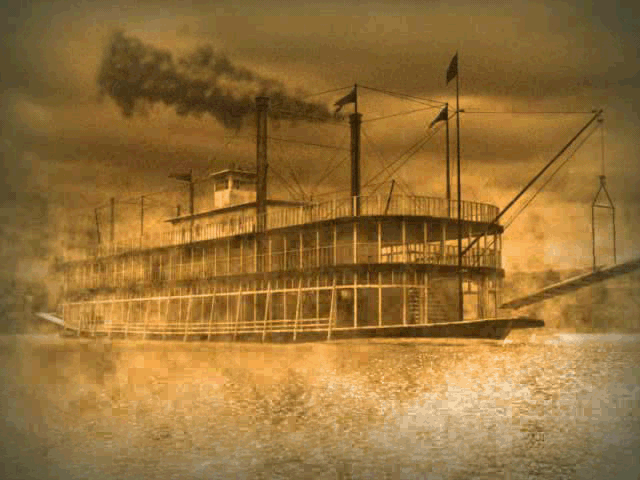

Annual Fog Festival
There is no experience quite like being immersed in thick fog with a crowd of hundreds all around you! This unique sensation occurs daily at Toluca Lake during our annual Fog Festival. The feeling of isolation as a swarm of humanity quickly transforms into a quiet gaggle of barely-seen spirits is a thrill like no other! But don't worry; the fog usually subsides within 30 minutes and the world returns to normal.
Little Baroness Remembrance
It has now been almost 90 years since the tragic sinking of the Little Baroness steamboat. Many long-time residents of Toluca Lake can either point to an old relative that died on the boat itself or recall how the events were told to them as children (usually by grandparents who were alive at the time of the event). Every year, we honor the unfortunate and untimely demise of 40 souls and the Baroness itself, a former pride of the town that still rests at the bottom of the lake.
Historical Town Tour

Courtesy of the official Historical Society, Toluca Lake offers very inexpensive and educational daily walking tours of our fair lakeside town. Starting at the centuries-old Town Hall, winding its way through long streets (careful to not get seperated when it's foggy!), and eventually ending up at the recently-restored docks, the tour leaves no part of town untouched. Before taking the tour, why not have a look at some of the
sights you will come upon?